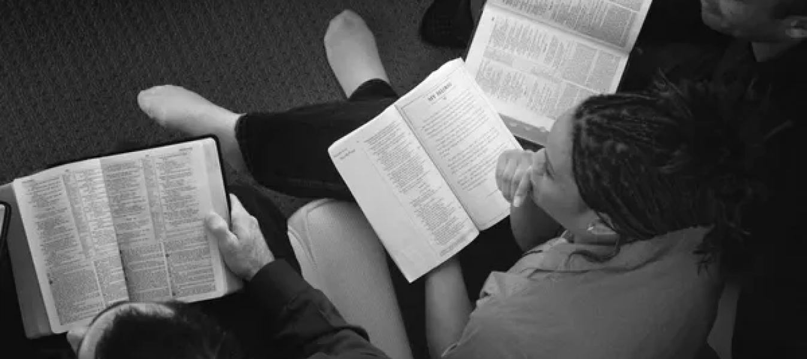

Grupos
Nossos encontros de grupos pequenos são momentos especiais de conexão e crescimento espiritual. Escolhemos residências acolhedoras onde os irmãos se reúnem para estudar a Palavra de Deus e se aprofundar no conhecimento sobre Ele.
Nesses encontros, buscamos meditar em livros que ampliam nosso entendimento sobre Deus, Sua palavra e Sua vontade para nossas vidas. Esses estudos nos ajudam a fortalecer nossa fé e a crescer em nosso relacionamento com Ele.
Além do estudo, esses encontros são oportunidades preciosas para compartilhar experiências, testemunhos e desafios da vida cristã. Valorizamos a comunhão entre os irmãos, pois acreditamos que juntos somos mais fortes. Nesses momentos, podemos orar uns pelos outros, encorajar e apoiar mutuamente em nossas jornadas espirituais.
Os grupos pequenos são espaços onde nos sentimos seguros para compartilhar nossas dúvidas, inquietações e vitórias. É uma oportunidade para construir relacionamentos significativos e encontrar apoio emocional e espiritual.
Através desses encontros, buscamos criar uma atmosfera de amor, respeito e crescimento mútuo. Todos são bem-vindos a participar e encontrar um lugar onde possam se sentir parte da família de Deus e crescer juntos na fé.
Junte-se a nós nos encontros dos grupos pequenos e experimente a alegria de estudar a Palavra de Deus, ampliar seu conhecimento espiritual e compartilhar momentos de comunhão sincera e edificante com outros irmãos em Cristo. Esperamos que você encontre nesses encontros um lugar de encorajamento, crescimento e apoio espiritual em sua jornada com Deus.
Os encntros acontecem todos os de segunda a sabado Nos lares, os hórarios vão de acordo com cada grupo
venha nós fazer uma visita!